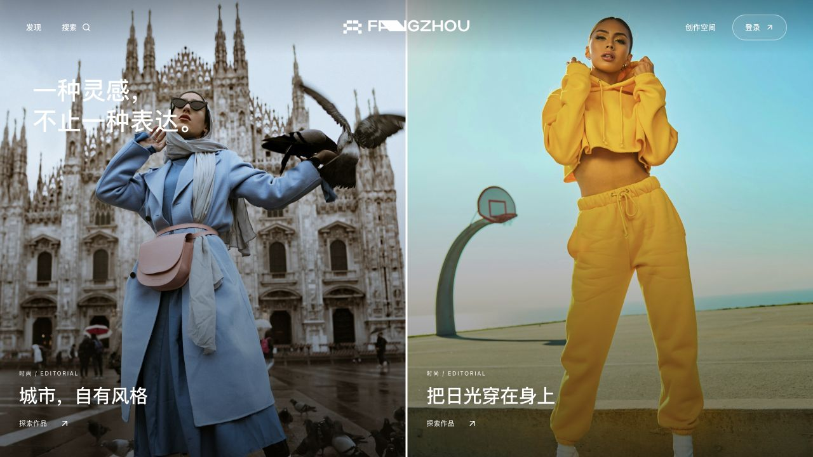
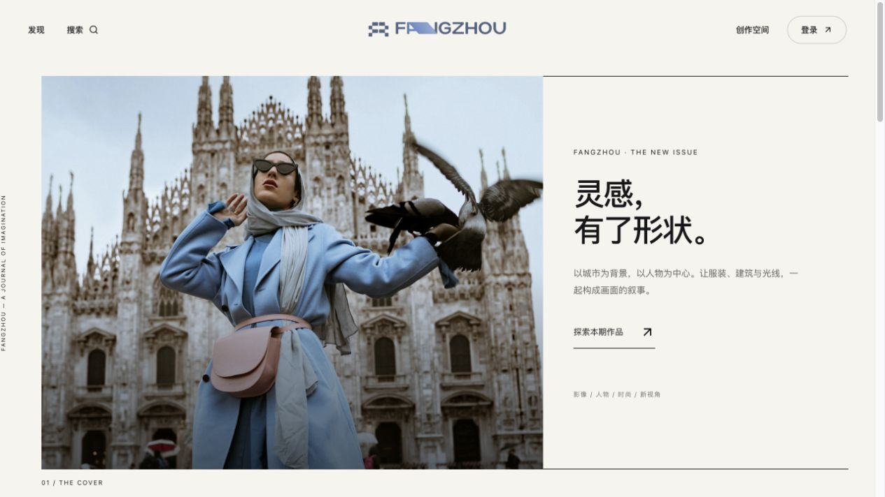
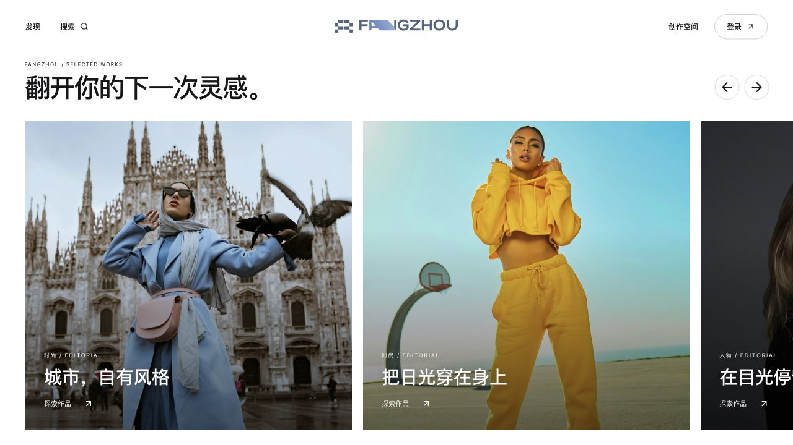
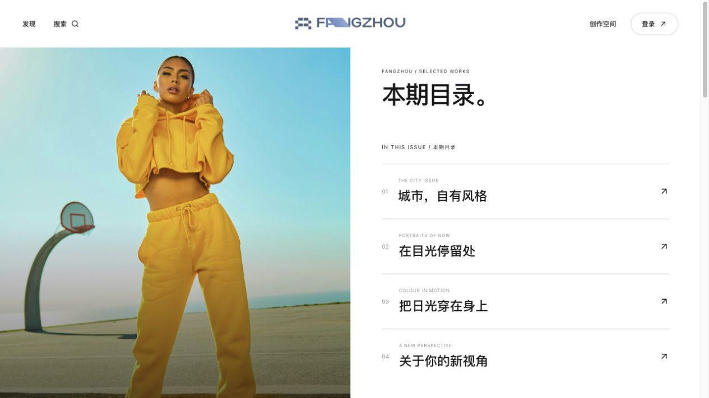

01全幅封面↗

02双封面↗
03三联大片↗
04横刊封面↗

05框内封面↗

06主编对页↗
07半页叙事↗

08刊头与大片↗
09双页画册↗
10下一期预告↗
11双列图集↗
12三列 Lookbook↗
13横幅专题↗

14横向翻阅↗

15四幅封面↗
16侧刊目录↗
17一主两副↗
18影像之间↗
19人物特刊↗
20专题腰封↗
21作品书架↗
22固定目录↗
23封面导览↗
24上下双刊↗

25整版目录↗

26封面叠题↗
27双面专题↗
28三栏编辑↗
29作品年鉴↗
30方舟月刊↗